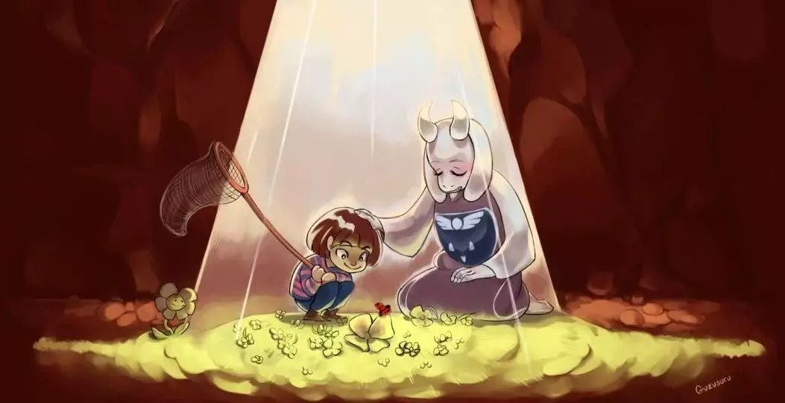
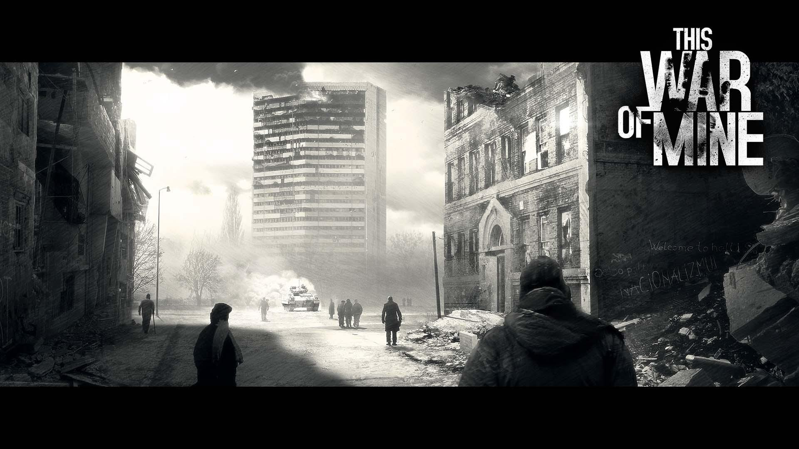
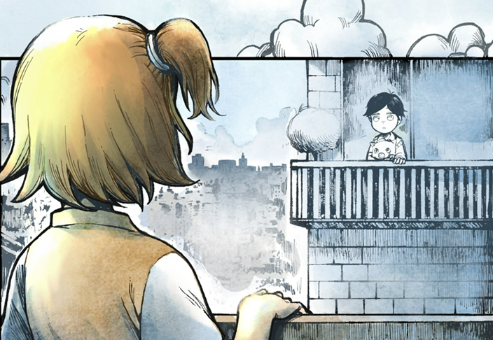
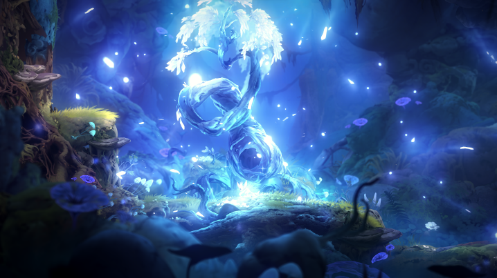

| ZST's House | About | Music | Game | Chat | [Dorm] |
|---|
|

|
Undertaleby Toby Fox et al. 「想到有朝一日老鼠能吃到奶酪……你充满了决心。」 很久很久以前，地球由两个种族均等统治着，分别是人类和怪物。 一天，人类担心怪物们摧毁人类，便击碎了双方之间的和平。在近似屠杀式的侵略下，人类大获全胜。人类将怪物驱逐到地下，并设下了相当强力的魔法结界，将怪物困在伊波特山下的地底。而传说中登上伊波特山的人类没有一个活着回来过。 201X年，一个人类小孩登上伊波特山，发现了一个大洞，并一不小心被藤蔓绊倒跌进了洞中…… |
|

|
This War of Mineby 11bits Studio 「In modern war there is nothing sweet nor fitting in your dying. You will die like a dog for no good reason.」 ——Ernest Miller Hemingway, Notes on the Next War (1935) 这是一款战争游戏，但玩家扮演的不是士兵而是平民。他们在战火连连的城市中生存，在城市废墟中寻找食物、武器、零件等任何可以利用的物品。 游戏生动地营造了战争中平民面临的种种困境——甚至是绝望。每一个选择都不可回退，每一天都在面临生存和道德的选择。 所幸，游戏中即使难度再大，战争都有结束的一天。这个希望本身就有很大的力量，大到不真实。 |
|

|
Finding Paradiseby Kan R. Gao et al. 「我们所有的记忆，以及其中的一切……都不过是我们编给自己听的故事罢了。」 伊娃·罗莎莉恩（Dr. Eva Rosalene）和尼尔·沃茨博士（Dr. Neil Watts）有一份非常特殊的工作：他们可以给人们重活一次的机会，从人生的最开始重头来过，当然这个机会只存在于将死之人的头脑里。 《寻找天堂》是《去月球》系列作品的第二部完整剧集。 这次故事跟随医生们的新病人——科林（Colin）的一生而展开，他们试图揭开这位病人一分为二的生活，实现他看上去自相矛盾的最后愿望。 它以虚幻而不失真实的剧情，激起玩家对生命和爱的思考。 |
|  |
Ori and the Will of Wispsby Moon Studios 「如果它从未见过光芒，它还有可能逃离黑暗吗？」 类银河恶魔城游戏集大成者。如果没有接触过类似游戏，这是一个很好的选择。 战斗体验极高（尽管前期操作难度较大），剧情作为冒险故事非常亮眼，美术与音乐都很突出。 是收到的一份礼物，非常喜欢w |
|
|
Across the Azure Skyby Hazel D. et al. 「我们的存在如此虚幻，一如这无远弗届的天。」 我是那个讲述故事的人。抱歉，我的声音已经有些颤抖了。我曾是一个普通的船夫，日复一日地在蔚蓝的海洋上航行，直到有一天，我决定踏上一次不同的旅程，一次寻找生命意义的旅程。 我跨越蔚蓝的天空，游历无数的海岸，遇见了各种各样的人，见证了他们的故事，他们各自的生命之歌。柴米油盐，生离死别，本以为已经司空见惯于那样的故事，如今看来却有别样的风味。 现在，我想和你分享这些故事，分享我的旅程。如果你能在我的故事中，找到自己的影子，找到你自己的故事，那就再好不过了。毕竟，生命的旅程是无尽的，而我们的故事也将永无止境。 那么，让我们开始吧。 |